Wildborn
A 2D adventure game about kids born with animal traits
The story so far
Five kids, saved before birth by a strange doctor's syrup, grow up half human and half animal. Their search for the truth leads them to a tropical island, where they must explore dangerous zones, battle monsters, and find out why they were born different.
Island mystery
A tropical island with 6 hidden zones, each holding a clue about the kids' origins.
Zone bosses
Each zone has a final monster. Defeat it to unlock a piece of the story.
Home base
A giant treehouse where the team gathers, rests and plans their next move.
Camera: still open
Started as a side-scroller. Now testing an isometric view, with characters that walk in 8 directions.
Where the syrup came from
The full story, in the order it happened. The game starts at the last step; everything before it is the mystery the kids uncover.
-
Long agoPirates on a hidden island
Pirates land on a remote island to hide their treasure. They don't know a tribe already lives there, a people who never had contact with the outside world. The natives fight back, but the pirates' weapons are far stronger.
-
Long agoThe syrup
Facing the end of their people, the tribe creates a syrup that gives them the strength of animals. The battle is brutal. Most of the pirates and most of the natives die. A few pirates escape, and they take some of the syrup with them.
-
Many years laterA curiosity in a museum
The syrup ends up forgotten, maybe in a museum collection. A doctor researching the legend of the animal-men and the pirates finds it.
-
Before the kids are bornThe doctor's offer
A few families are told their unborn babies are too ill to survive birth. The strange doctor offers a radical cure: the syrup. The babies will live and grow stronger, but as hybrids, with human minds in partly animal bodies. The parents say yes.
-
ChildhoodThe hidden school
The doctor offers to keep the children away from the world, at a small private school far from civilization. They grow up together as friends and rarely question how they look.
-
Growing upCoco finds a photo
Older now, the kids want answers. Coco finds a picture of the doctor and starts to investigate. Together they track the doctor down, and the trail points to an island where the mystery of their condition can be solved.
-
The game beginsLanding at Sandy Cove
The crew arrives on the island. Somewhere in its zones are the tribe's story, the pirates' treasure and the truth about the syrup.
Meet the crew
Five animal-kids, one island. Each character has a unique personality, fighting style and zone to explore.

Sharp, clever and always asking why. Coco leads the way into the unknown.

Quiet and steady, but devastating in combat with her bo staff.

Dark and fast, with sharp instincts and an unshakeable bond to his pack.

Big heart, big strength. Otto is everyone's favourite — and nobody's pushover.
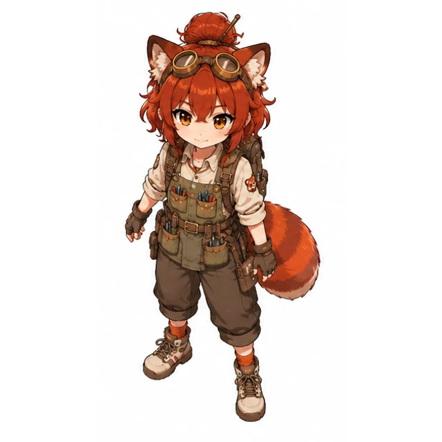
Builds contraptions to fix what no one else will, with a sarcastic comment on the side.
The girls, up close
Profile sheets go further than the first design sheets: personality traits, likes and dislikes, expressions, and a line in each character's own voice.
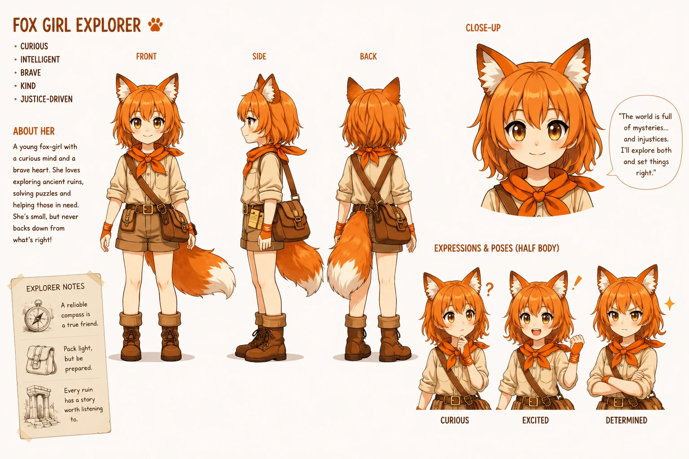
The world is full of mysteries… and injustices. I'll explore both and set things right.
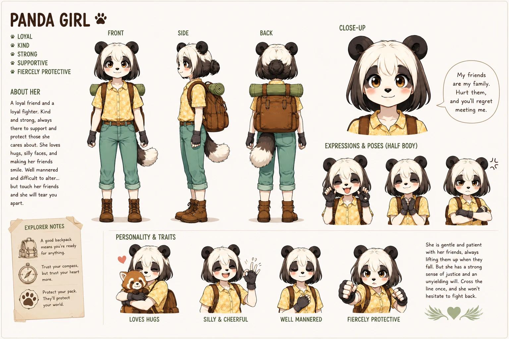
My friends are my family. Hurt them, and you'll regret meeting me.
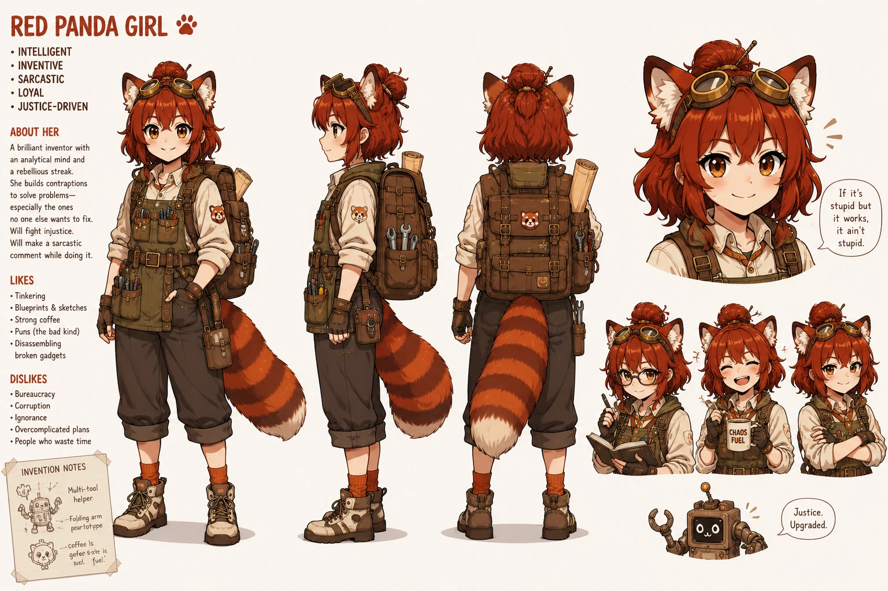
If it's stupid but it works, it ain't stupid.
From turnaround sheet to walking sprite
To try an isometric view, each character needed to walk in 8 directions. Instead of drawing every frame, we built a small local pipeline: one turnaround sheet in, a game-ready sprite sheet out. Everything runs on a home PC with an RTX 3060.
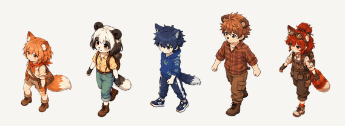
1 · The turnaround sheets
Each character got a new sheet with 5 views from a high isometric camera: south, south-west, west, north-west and north. The east side comes for free by flipping.
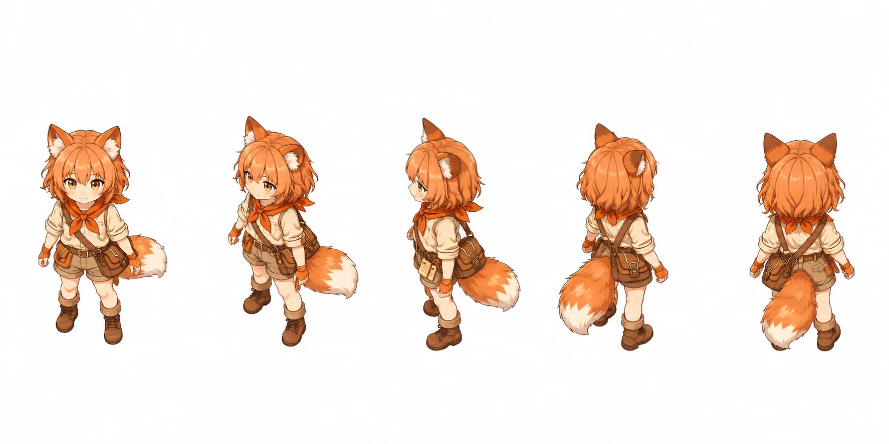
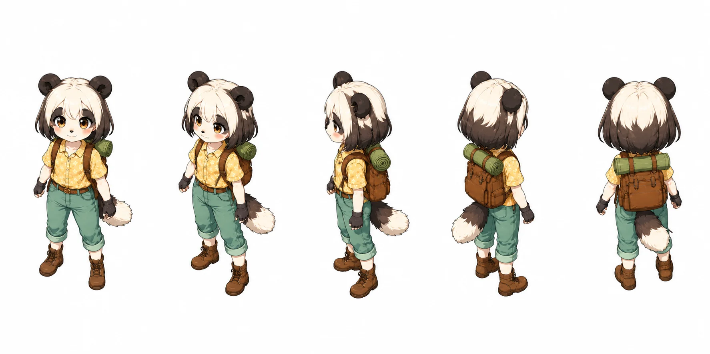
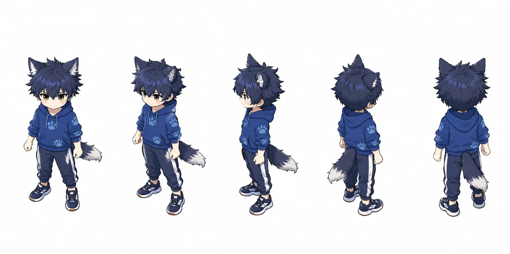
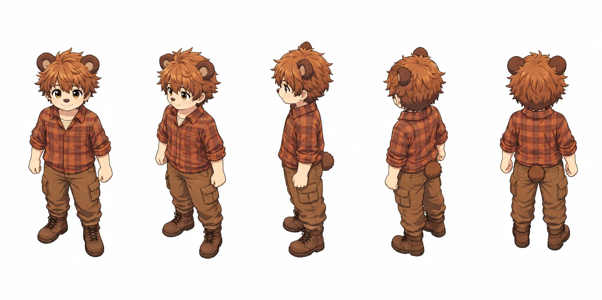
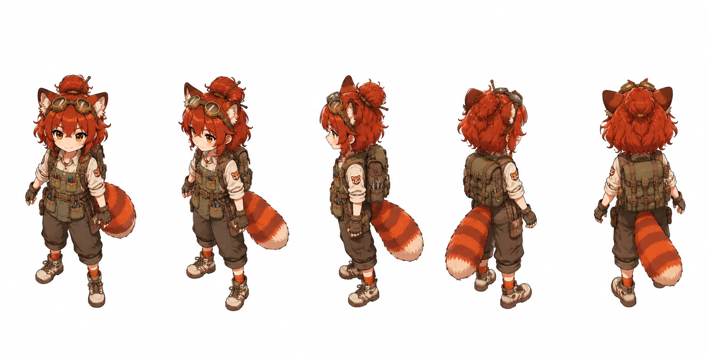
2 · From still to animation
- SliceCut the sheet into single views, lined up on the feet so every character stands on the same ground.
- AnimateAn open video model (Wan 2.2) turns each still into a short walking clip. We make 4 takes per direction.
- Cut outAn AI matting model removes the background, so the character can be placed on any scene.
- Find the loopThe pipeline looks for the stretch where the last step flows back into the first, so the walk repeats smoothly.
- Pick the best takeA preview page shows all takes side by side. A human picks the one that looks right.
- Pack for the gameThe picks become one sprite sheet plus animation data that the game engine (Phaser) loads directly.
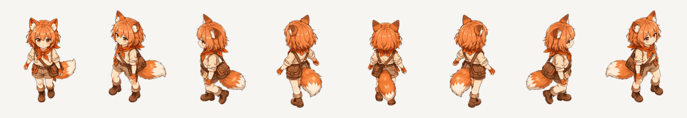
Locations
The island is divided into 8 key locations. Kids start at Sandy Cove and build their base at The Great Treehouse before venturing into the 6 mystery zones.

Design progress
Tracking everything we've built so far, step by step.